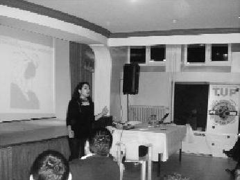

TUP, sanki bir yara bandı gibi, gittiği yerde insanların her an fark edemediği, ama sürekli sızlayan yaralarını kapatıveriyor. İnsanları mutlu etmekten mutluluk duyan insanlarla dolu bir sosyal sorumluluk projesi. Gönüllüleri için de ikinci bir okul. (Elif Çakıcı)
Elif, projenin liderlerinden oldu. Bir yıl böcekleri yönetti. İnisiyatif sahibi, yürekli bir lider. Bu ufak böceği, yüzlerce kişinin arasında arka sıralarda gizli gizli seyrettim ve onunla gurur duydum. Artık ileride bir üniversite kürsüsünde mi olur, İzgören&Akın'da mı, bilmem. Çok iyi bir öğretmen ve şahane bir anne olacak Elifçik.